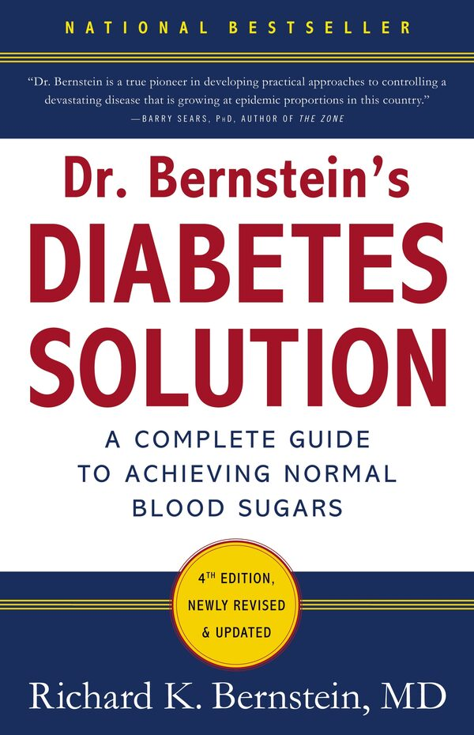
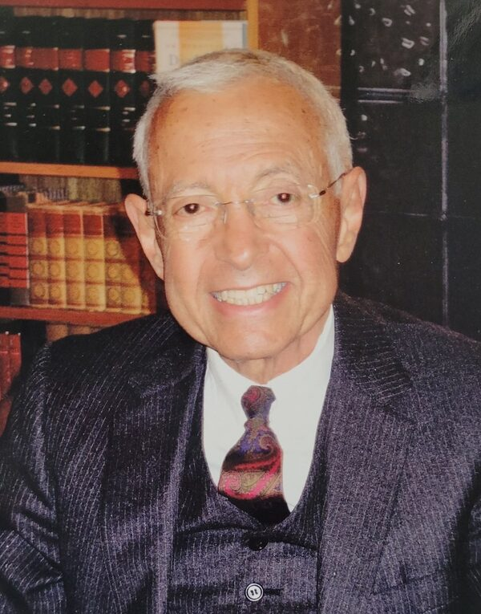

 source: www.hachette.co.nz/richard-k-bernstein/dr-bernsteins-diabetes-solution-a-complete-guide-to-achieving-normal-blood-sugars-4th-edition |
 source: www.dignitymemorial.com/obituaries/forest-hills-ny/richard-bernstein-12340343 |
以下是從《伯恩斯坦醫師的糖尿病治療方法》第四版（《Dr. Bernstein’s Diabetes Solution: The complete guide to achieving normal blood sugars》,4th edition, Little, Brown & Company, 2011）選擇性地翻譯我自己覺得有趣的段落或部分章節；這本書目前沒有中文版，如果有興趣且可以進行英文閱讀的讀者請務必取得參閱，相信會對疾病治療有極大的幫助（電子書版本目前仍可購買取得）。
Richard Bernstein醫師已於2025年4月15日離世，享壽90歲。
This post is a selected Chinese translation from 《Dr. Bernstein’s Diabetes Solution》, 4th edition, Little, Brown & Company, 2011. I just choose paragraphs and partial chapters, which interest me, as materials for personal translation exercises. If there is anyone who is interested in this endocrine disorder, please go get this book and read it thoroughly. The knowledge and treatments in it should have great therapeutic value on this disease and its complications.
Dr. Bernstein died on April 15, 2025, at 90 years of age.
譯者簡介：
林詠盛(Louis)，1985年生，高中肄業。14歲時精神狀況出現嚴重問題，遲至19歲才被發現罹患第一型糖尿病、並隨即接受傳統治療。30歲後身心狀況急劇惡化，但有幸於35歲時接觸到Bernstein的著作及斷食、極低碳水飲食等治療方法，不僅精神狀況有所改善、傳統治療的後遺症及併發症也獲得了極大的療癒。
About the Translator:
Louis Lin (Lin Yung-sheng), born in 1985, left secondary school without completing studies. From around the age of fourteen, he suffered from serious psychological difficulties; it was only at nineteen that he was diagnosed with type 1 diabetes, after which he commenced conventional medical treatment. His physical and mental health deteriorated sharply after his thirtieth year, yet at thirty-five he was fortunate enough to encounter Dr. Bernstein’s writings together with therapeutic approaches including intermittent fasting and a very-low-carbohydrate/high-fat diet. These not only alleviated his psychiatric symptoms but also brought about a marked recovery from the adverse effects and complications of the conventional treatment he had earlier received.
- louisophie@gmail.com
- louisophie.github.io/withinretreat/Article-list.html
- withinretreat.louisophie-gitlab.workers.dev
- x.com/louisophie_
- withinretreat.blogspot.com
- louisophie.wordpress.com
- #糖尿病治療 #飲食科學 #糖尿病 #中文翻譯 #diabetes #dietary #translation #RichardKBernstein
- Re-edited in Aug. 2026
自1997年第一版發行至今，本書早已成為糖尿病患者治療與血糖控制的聖經：作者使用不同於傳統治療的革新方法，不只幫助了許多病患達成被他人視為不可能的血糖正常化目標，自己更是本書治療方法的最佳代言人。他於12歲時罹患第一型糖尿病，後在任職一間成功企業的執行長與工程師期間，他嘗試了各種治療方法來將自己的血糖穩定控制下來，並成功逆轉了困擾長達十多年的長期併發症。作者在45歲時，為了能夠發表他的治療論文而申請就讀醫學院，之後便開始行醫治療其他的糖尿病患者。
在此新版書中，伯恩斯坦醫師用平易近人的言語詳細介紹了他的治療方法，除了可使血糖穩定正常外，對糖尿病併發症也可以有效預防乃至逆轉；他在書中也舉出了許多新型的治療儀器、胰島素藥劑、治療藥物與營養補充品的相關資訊。作者也解釋了肥胖與第二型糖尿病之間的關係，並指出打破肥胖與胰島素阻抗之惡性循環的實際方法；另外作者也提到了腸泌素類似物（incretin mimetics）¹的使用細節，目的在減緩患者碳水化合物欲求及過食問題、以期能夠較快速且容易地減重。伯恩斯坦醫師尤其著重於飲食治療，在書中不只解釋了須避免的食物、也會詳細說明餐點的內容設計原則，書末更提供了50道低碳水、高蛋白質的佳餚食譜。
作者在書中也討論了各項治療的最新科學進展，包括胰島素阻抗、血糖測量方法、胃輕癱（gastroparesis）、新式減重藥物與運動技巧等等的重要知識。這是一本能夠同時幫助第一及第二型糖尿病患者，協助其控制好並正常化血糖的唯一指南，目的在幫助糖尿病患者主宰自己的疾病，並過上更好、更健康的人生。
Richard K. Bernstein（理查·伯恩斯坦）醫師是當代治療糖尿病及其併發症最重要的人物之一。他於紐約市的Mamaroneck（馬馬羅內克）以自己的專科診所來專門治療糖尿病與糖尿病前期的病患，同時也是American College of Nutrition（美國營養學會）、American College of Endocrinology（美國內分泌學會）、American College of Certified Wound Specialists（美國認證傷口專科人員學會）會員，並擔任Albert Einstein College of Medicine（阿爾伯特·愛因斯坦醫學院）教師。伯恩斯坦醫師目前已罹患糖尿病超過60年之久。
Heinz I. Lippmann（海因茨·李普曼）醫師、
Ephraim Friedman（艾弗拉姆·弗里德曼）醫師及
Samuel M. Rosen（薩繆爾·羅森）醫師，
因為您們始終堅定地認為，糖尿病患者也應該要擁有一般人正常的血糖值。
——————
——超過65年的疾病奮鬥史
在我認識的朋友當中，很少有跟我一樣在1946年得到糖尿病但現在仍存活下來的，更不用說這之中沒有一個人能夠擺脫糖尿病所造成的各種長期併發症。以我的立場，要不是我有找到治療的方法，否則現在我也無法健康地活著。許許多多有問題的糖尿病飲食和觀念到現在仍被大多數的醫生視為圭臬，長期實行下來會對病患造成難以挽回的嚴重傷害；對此我個人感觸甚深，因為這些被認為有關糖尿病治療的傳統智慧結晶，事實上差點就讓我一命嗚呼。
我是在1946年12歲時被診斷罹患糖尿病，在之後的20多年我就如一般糖尿病患者一樣，老實本分地照著醫生指示的治療方法來管理病情，並在疾病的限制下盡可能地過我正常的生活。但這段時間下來，我的糖尿病併發症卻越來越嚴重，就跟許多的糖尿病患面對的現實一樣，我認為我並沒有辦法頤養天年而是會提早往生；我雖然看起來像是活著，但生活品質卻乏善可陳。我知道這就是我的疾病，也就是所謂的第一型或是胰島素依賴型糖尿病。這種病常在小孩子身上發生，也因此常被叫作幼年性糖尿病；像這種得到第一型糖尿病的人為了活下去，每天都要注射胰島素才行。
1940年代可說仍是糖尿病治療的黑暗期。在那個時候我每天都要煮我的針頭和玻璃注射器來消毒，並且三不五時就要用磨刀石把針頭重新磨尖，而且我還要用試管和酒精燈來檢測我的尿液裡有沒有糖分。許多現在被視為理所當然的治療工具，像是能夠快速監測手指血液血糖的機器、或是拋棄式的胰島素空針，都是那個時候所無法想像的。但即使如此，現在患有第一型糖尿病孩童的父母親，還是跟我那時的父母一樣，他們沒有辦法擺脫有一天自己的小孩會不小心躺在床上、卻叫也叫不醒的恐懼心理；這種因治療上的嚴重錯誤而造成的悲慘狀況，都是這些家長想要全力避免的。另外也因為我長期的高血糖，我的身體也有發育遲緩的問題；這種成長困難的狀況，即使到了今天，仍發生在許多幼年發病的糖尿病患者身上。
那時的醫學界剛開始認為高脂肪和心血管疾病有所關連，而隨後沒多久大家也開始認定大量的油脂攝取是造成高血脂的原因。而因為許多的糖尿病患者，中間包括了小孩子，都有所謂高膽固醇的問題，因此很自然地醫生開始認為許多糖尿病心血管疾病的併發症，像是心臟病、腎衰竭或是失明等等，都是因為病患吃了太多的油脂所造成。因此之故，我被要求進行低飽和脂肪、高碳水化合物的飲食治療（45％的卡路里來自碳水化合物），而且這還是在ADA（美國糖尿病協會）和AHA（美國心臟協會）開始推廣這種飲食前的情形。因為碳水化合物會提高我的血糖，為對治血糖的上升，我被迫用10cc的超大支針筒來注射大量的胰島素，而這種注射過程既緩慢又痛苦，最終把我屁股的皮下脂肪都給消磨殆盡；還有即使我吃的是低油脂的飲食，我的血膽固醇和三酸甘油酯仍一直居高不下；我的眼睛也出現了病變，分別是眼瞼有脂肪堆積、以及雙眼虹膜周遭有了灰色沉澱物產生。
正當我二、三十歲，也就是一般人生命中最精華的時候，我的身體卻處在一種快速耗損衰敗的情形：我整天都有嚴重的胃灼熱（糖尿病造成的胃輕癱），肩膀總是冰冷僵硬、雙腳對外界的觸感也出現問題，且肢體的損害變形越來越嚴重。而當我把這些狀況說明給我的糖尿病專科醫生（同時也是那時ADA的主席），我卻總是得到一樣的回答：「別擔心，這些問題跟你的糖尿病沒有關係，你病情照顧得很好。」但是我一點都不覺得好在哪裡；現在我了解到這些問題廣泛地發生在病情控制不好的糖尿病患者身上，只是在過去我卻被灌輸這些現象都是正常無虞的。那時我結了婚，申請上了大學且開始接受工程師的訓練，而且也有了小孩；儘管我外表看起來就和小孩子差不了多少，我卻覺得我已經是個老頭子了：我下半部雙腳的毛髮都不見了，這表示我有了周邊動脈疾病的問題，而此併發症會造成截肢；透過運動壓力測試，我被診斷出得了心肌症，而這是一種心臟肌肉纖維化的現象，在第一型糖尿病患身上很常見，並常造成心臟衰竭和死亡。儘管我被告知病情控制得宜，我仍為大大小小的併發症所苦：我出現了夜盲問題、眼球微動脈瘤症（雙眼血管膨大）、及早發性的白內障；另外只要我躺下來，我的大腿就開始疼痛，而這是一種常見卻被忽視又不被了解的併發症，叫作髂脛束／闊筋膜張肌症候群（iliotibial band/tensor fascialata syndrome）；也因為我的肩膀僵硬，穿件T-shirt的簡單動作，對我而言卻是巨大的痛苦。
除此之外，透過驗尿我發現我有大量的尿蛋白，閱讀相關文章後我了解到我罹患了嚴重的腎臟病，而在1960年中後期那個年代，有嚴重尿蛋白的第一型糖尿病患者，他們的生存期只有五年。我的一個大學工科同學跟我說，他有一個沒有糖尿病的姊姊也是死於腎臟病，而且因為身體水分無法排除，死前她全身如充氣般腫大；而在得知我的尿蛋白之後，我晚上開始做惡夢，夢到我就像一顆不斷充氣到最後終於爆炸的氣球。到1967年為止，我為這各式各樣的糖尿病併發症所苦，身體總是孱弱不堪且感到提早衰老。我有三個小孩，其中最大的不過才六歲，我卻了解到一個殘酷的事實，就是我沒有辦法活著看到他們長大。
當時我父親建議我去健身房鍛鍊身體。他認為在激烈的運動後身體會感到好過些，而我也因此開始了每天的練習。或許是運動真的對身體自我調節有一點用處，我對病痛的負面情緒確實有得到舒緩，畢竟鍛鍊身體至少給我一種有在做些事情的感覺。但雖有鍛鍊健身，我沒有辦法增加肌肉量，身體也沒有變得強壯多少。我就這樣做了兩年的重訓，但無論我怎麼咬緊牙根努力地執行，我都擺脫不了只有115磅（52公斤）的虛弱身體。
這些是我在1969年的情形，而我的醫生太太跟我說明了一件她發現到的問題，就是我總是處在一種低血糖的上下波動狀態，不是我的血糖正在快速地降低、就是正處在低血糖中、或是剛脫離低血糖狀態的恢復階段，而它又伴隨著全身虛弱和頭痛。會造成低血糖的原因，是我以高碳水化合物為主要飲食，而為了要壓低隨後而來的血糖大幅上升，我必須注射大量的胰島素；但問題是大劑量卻會造成無法明確估算藥效的嚴重後果。每當這種低血糖的波動發生，我的頭腦就會陷入混亂、行為開始失序、且會對他人說出有失禮貌的言語；頻繁的低血糖已經給了我父母極大的負擔和壓力，而現在又變成我的太太和小孩要承擔，真的讓我感到家人已經瀕於崩潰邊緣。
就這樣一直到了1969年10月，我的人生才突然間出現了一點光明。
原本我在醫療器材製造公司擔任研究主管，隨後換了工作到一間家庭用品公司上班，但和原公司的交流並沒有中斷；有一天我收到了最新一期的商品目錄期刊（刊名為《Lab World》），裡面有一則新儀器的廣告，它可以讓護理人員在半夜且實驗室休息的時候，對昏迷不醒的病人可以立即有效地辨識出是血糖問題還是酒醉，然後可以馬上採取對治；且廣告說明，這台機器能夠在一分鐘、且只用一滴血就可測得血糖數值。既然我有嚴重的低血糖問題，而尿糖測試又不精確（糖分在離開血管後才變成尿的一部份），因此如果我能夠知道我的血糖，或許我就能夠找到方法來避免低血糖的發生、神志不清和暴躁易怒說不定也可以得到解決。我對這台機器著了迷：它有一個用玉石軸承組成之4吋長的檢流計，總共有3磅重（1.36公斤），要價650美元。我跟製造商聯絡想要訂購一台，但他們只賣給醫生和醫療院所、不提供給病患，因此我便用我身為醫生的太太之名義買了一台回來。
我開始自己測量血糖，一天測5次，並且發現到我的血糖值就跟雲霄飛車一樣高高低低。身為一個工程師，我已經習慣於用數學方法來解決問題，前提是我要有數據以及了解問題背後原理，而現在我突然有辦法能夠分析疾病狀況了：透過頻繁地測量，我發現到血糖會從低至只有40mg/dl到高達400mg/dl，而且是一天會發生兩次這種大幅波動，而一般人正常的血糖值也不過只有83mg/dl而已，也難怪我會有情緒劇烈不穩定的現象。為了處理我的血糖起伏，我把胰島素注射的次數從一天一次改為一天兩次，並對飲食作了實驗性的調整，以減少碳水化合物來降低注射的劑量，而極高和極低的血糖值雖然還是會出現，但已經不會這麼頻繁地發生了。
我就這樣自己測量血糖長達三年，但我發現到併發症仍有惡化、體格也沒有什麼改變，仍舊是只有115磅（52公斤）的瘦弱狀態；我開始對糖尿病併發症的預防和運作機制有了質疑，因此我想辦法去取得相關的期刊論文，想試著去了解運動到底能不能有效地阻止併發症的發生。那個年代要取得期刊論文不像現在只要上網點一點滑鼠那麼簡單：1972年時，我要先向當地的醫學圖書館提出想要的論文清單（這就要花75美元），接著文件會先送到華盛頓特區進行處理，最後才會寄給申請人，而這樣一趟下來要花大約兩個禮拜的時間；雖然過程麻煩，我還是發現了一些看起來有趣的文章並提出了申請。許多論文往往數據晦澀難懂、又多是以動物實驗為主，且沒有一篇討論到運動和併發症預防，相關資料付之闕如；但這些動物實驗所呈現出來的數據表明，糖尿病併發症是可以預防甚至是逆轉的，只不過靠的不是運動，而是保持血糖的正常！這實在是出乎我的意料之外，因為所有關於糖尿病的治療都是側重其它的面向，像是低脂飲食、預防嚴重低血糖發生、與高血糖所帶來的致命性酮酸中毒，可是這些治療方法，都和長時間讓血糖值維持在正常範圍沒有什麼關係。
我抱著興奮的心情把這些資料拿給我的醫生看，但他卻不甚感興趣。「這些動物畢竟不是人類」他說，「更不用說要穩定人的血糖是不可能做到的。」可是身為一個接受科學訓練的工程師，醫師認為這做不到，我卻覺得沒有什麼是不可能的，更何況我已經走投無路了，我就下定決心把自己當成動物來自己治療自己。
接下來的一年裡我持續每天量5到8次的血糖；每隔幾天我會在飲食和針劑使用上作小的變化，對血糖有益的則保留、無用的則避免。我發現到1公克的碳水化合物會讓我的血糖上升5mg/dl，而½單位的舊式動物胰島素會讓血糖降低15mg/dl。我就這樣不斷地改進胰島素的使用和飲食內容，在這一年內我已經可以達到一整天下來我的血糖都是平穩的狀態，而多年累積的長期疲勞和併發後遺症，也在一夕之間消失殆盡、取而代之的則是神清氣爽之感；身邊的人也注意到我的灰色膚質消失了，而幾年下來始終飆高的高膽固醇和三酸甘油酯，現在不只是大幅度地下降、而且還是在正常範圍的下限內。
我的體重開始增加、且跟一般人一樣能夠鍛鍊肌肉增長了。我的胰島素劑量也大幅減少，只需要一年前⅓的量即可，在後來使用新開發出來的人體胰島素，用量更只要原來的⅙不到；原先因在皮下注射大劑量胰島素而造成的疼痛與一直好不了的腫塊，現在也消失了；因高膽固醇而增長的眼瞼脂肪也不見了；我的消化問題（如長期胃灼熱和飯後打嗝）和困擾已久的尿蛋白，現在也都徹底沒有了。時至今日，我許多高敏感度的腎功能檢測結果也都完全正常；而最近我也發現到我雙腿血管內壁中的肌肉鈣化也正常了，但這種蒙克伯格動脈硬化症（Mönckeberg’s atherosclerosis）是當初我在醫學中心任職「周邊血管疾病門診」主任時，以這是無法治癒疾病的觀念來教導底下醫生的，結果我自己證明自己錯了。不過另一方面，我變形的腳、下垂的眼瞼和下半部雙腳的掉毛現象並沒有痊癒，到現在還是這個樣子。但不管怎麼說，我現在已經73歲了¹，我的冠狀動脈鈣化評分只有1分，比大多數的青少年都還要好。
我有一種身為自己身體新陳代謝主人的新感動，就和我在工程領域上解決一個困難問題所產生的成就感相同：我靠著自學來穩定我的血糖、且不再有如雲霄飛車般極高或極低的狀況發生；也就是說糖尿病及各種併發症，是只要靠自己就能夠加以控制並改善的。那時是1973年，我對病情控制的成功非常地興奮，認為這是一個大發現，原因是我訂閱且讀遍了所有的糖尿病相關期刊，但有提到人體血糖正常控制必要性的文章卻是一篇都沒有，反而是每隔幾個月就會出現一篇宣稱正常控制血糖是不可能的論文；只是身為一個工程師，我卻做到了醫師專家們認為不可能達成的任務，而這到底是怎麼做到的呢？我現在回頭思考這個問題，我只能由衷感謝一路走來許許多多的幫助，最終讓我找到了正確的治療方法，並讓我的身體、人生、以及家庭能夠起死回生且繼續前行。不管怎麼說，我有義務要把所得到的知識和治療方法分享出去，避免其它成千上萬所謂「控制良好」的糖尿病患者跟我一樣遭受沒有必要的苦難；而那些醫師應該也會非常震驚地了解到，原來糖尿病的嚴重併發症是能夠完全避免、甚至是可以逆轉痊癒的。
我天真地希望可以讓大家知道我發現的方法、而且醫生會採用這些技巧來幫助病患，於是我把這些資料整理起來寫成文章，並寄給生產我使用之血糖機的公司Ames Division of Miles Laboratories（邁爾士實驗室艾姆斯部門）中一位叫作Charles Suther（查爾斯·薩瑟）的業務，他當時負責糖尿病器材，同時也是我一路走來唯一給我支持和鼓勵的人；他收到信後還請了一位他們公司的醫學期刊編輯來幫我的論文作修訂。隨後的幾年間，我把我的論文和修訂後的版本寄給各家醫學期刊；同時我的健康狀況也越來越有起色，無論是我自己或是家人都看在眼裡，這也表示我的方法是有效的。無論如何，在我收到的許多拒刊信中，他們卻不認同這樣一個明顯的事實，原因只出在這跟專家們所受的教育與觀念是對立衝突的。這些信件往往都是這樣一種用詞：「各論文目前對於血糖正常控制的必要性並無共識。」（NEJM，新英格蘭醫學期刊），或是「有多少病患有能力去使用電子儀器來測量血糖、胰島素、尿液或是其它的身體數據呢？」（JAMA，美國醫學期刊）。但事實上完全相反，因為從1980年起，這些所謂「電子儀器」都變得非常普遍了，且血糖器材的世界年銷售也已經超過40億美元；只要我們進到藥局就看得到一整排的血糖機，也可以想像有多少的病患正在或是能夠使用這些「電子儀器」了。同時我也嘗試了其它的管道、並參加許多有名的糖尿病友團體，希望可以認識到更高階層如醫師或是相關的研究人員；但這沒有什麼太大的幫助，因為就算我參加活動、成為協會的工作人員、以及和許多有名的糖尿病學家成為朋友，在美國這個地方，我前前後後也只遇見3位願意提供我的新方法給病患的醫生，而且還只是作為選項之一來實驗觀察看看而已。
Charles Suther同時間帶著我未發表的論文（這時我已自費打字並排版印刷）洽談全國各大學的研究中心，並發現到尤其是在患者自己測量血糖這件事情上，遭到了醫師們的強烈反對，即使這對患者血糖控制的幫助極大也無濟於事，這也導致他們公司晚了好幾年才推出給病患使用的血糖機，也讓他們和其它有關血糖機、血糖試紙的業者損失了大筆營收，因為本來是可以賺更多的。這種來自醫界的反彈有幾個原因，首先是他們沒有辦法想像糖尿病患者怎麼可以有能力來自我治療呢？因為病患要是懂醫學知識，那他們要怎麼賺錢？在那個年代，糖尿病患每個月要去醫生那邊量一次血糖，要是他們能夠自己在家花25美分的錢（那個時候的價錢）就可以自己測血糖，那誰還要花錢看醫生呢？更何況醫生自己也都不相信保持血糖穩定有什麼重要性可言。就某個層面來說，血糖自我監測對只治療糖尿病的病徵而非病根的眾多醫師來說，在經濟收入上有著非常巨大的威脅。最好的例子就是眼科診所，只要稍微注意一下就可以看到，在候診間總是有為數眾多的糖尿病患在排隊，等著做昂貴的螢光眼底血管攝影(fluorescein angiography)、眼部電腦斷層或是雷射治療。
配合Suther在背後無償的支持，1977年我在紐約市開始了我2所大學補助的研究計畫，而且先後2個研究成果都成功治癒了糖尿病患者早期的併發症，也因此他們又分別補助了世界第一場針對血糖自我監測的研討會。從那時起我開始受邀參加世界性的糖尿病論壇會議，可是卻只有極少數是在美國本土獲邀出席的；雖然如此，我的第一篇醫學論文終於得以在這許多會議中的一場摘要中發表，它的題目是《Protein as the Principal Source of Carbohydrate in the Treatment of Diabetes》（《以蛋白質作為碳水化合物主要來源的糖尿病治療方法》）。令我感到有趣的是，有更多的外國醫師比他們的美國同僚對血糖控制更有興趣，像是一些早期決定採用血糖自我監測治療方法的，是來自於以色列和英國的醫師。1978年時，大概是受Charles Suther的努力影響，一些美國的研究人員開始嘗試我們的治療方法、或是經調整後再給病人實行。最後是到1980年，血糖機製造商才終於開放給病患購買使用。
這件事情進展之緩慢令我無法接受，因為只要整個醫療體系繼續原地踏步，本來可以獲救的糖尿病患就會因此死去，更不用說其它成千上萬能夠大幅提升生活品質卻被嚴重耽誤的病友了。1977年，我決定辭職去念醫學院——既然打不過對方，那我就加入他們，而有個醫師頭銜，我寫的論文在發表上或許也會順利些，且我也可以把血糖控制的方法教給其它的人。經過一年的預備醫學課程和一年的等待，我在1979年進入了Albert Einstein College of Medicine（阿爾伯特·愛因斯坦醫學院）就讀，而那時我已經45歲了。在入學第一年我就寫了我的第一本書《The Glucograf Method for Normalizing Blood Sugar》（《糖尿病治療：以血糖圖表法來穩定血糖》），在裡面我詳細列舉了第一型、也就是胰島素依賴性糖尿病的治療方法；這幾年下來我又陸續出版了八本書、以及在科學和有名的期刊上發表了多篇論文。在最近的五年中，我一直有免費的線上影音提供給數以千計的醫學人員和患者觀看，這些問答內容在每月的最後一週都可在www.askdrberstein.net找到¹。其中的一千個問與答，我們整理成了2本電子書，分別是《Beating Diabetes: Type 1》（《第一型糖尿病療法》）與《Diabetes Beating Diabetes: Type 2 Diabetes》（《第二型糖尿病療法》），它們在網路上都可以找得到。
1983年我終於在紐約的Mamaroneck（馬馬羅內克）住家附近開了我自己的診所，且我的年齡也活超過了一般醫學治療下第一型糖尿病患者的生存歲數；而這些年下來，我可以自信地說，我是有能力可以同時幫助第一及第二型糖尿病患者的不二人選，而我做的工作就是教他們如何良好控制自己的疾病，並讓他們可以跟我一樣繼續享受人生接下來的精華歲月，且過得長壽、健康又碩果累累。
本書的目的是在分享我用在病人及自己身上的治療技巧和方法，其中也包括目前最新的醫療發展概況。若您自己或所愛之人亦受糖尿病之苦，我相信本書能提供您正確的治療方法來改變您的人生，就跟我改變了我自己的人生一樣。